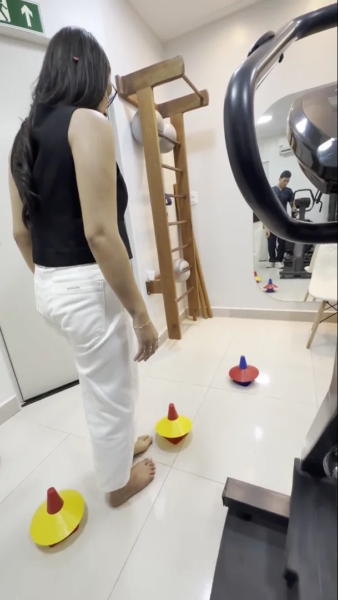
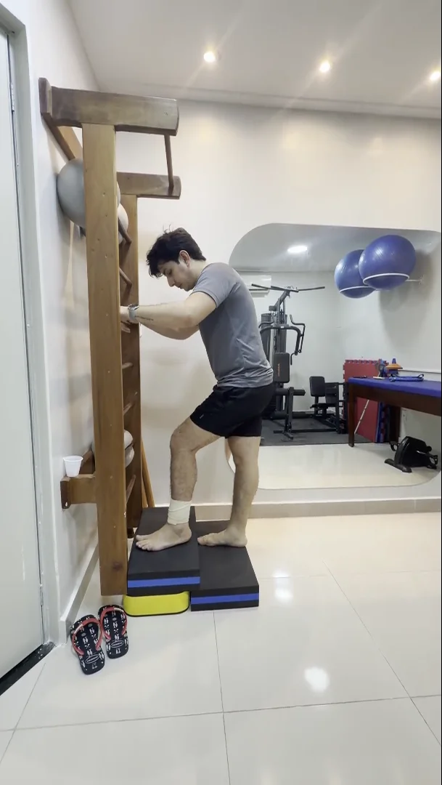
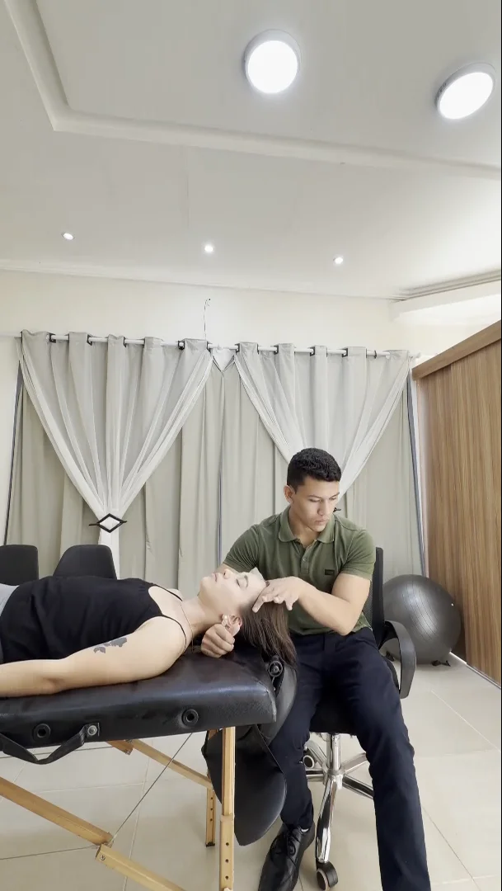
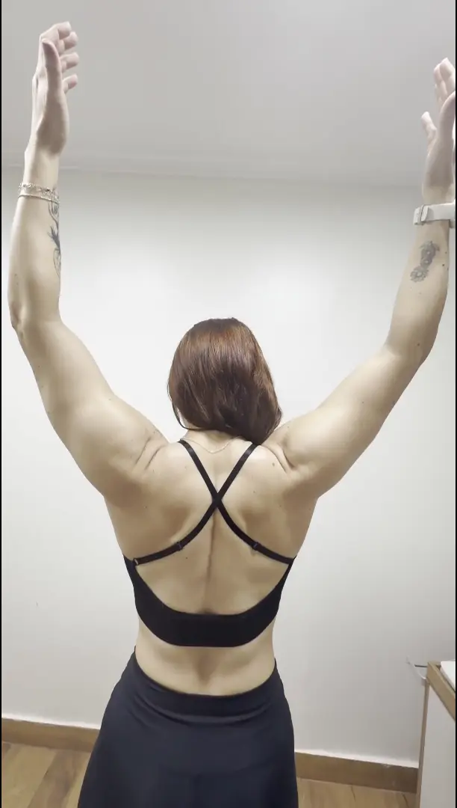
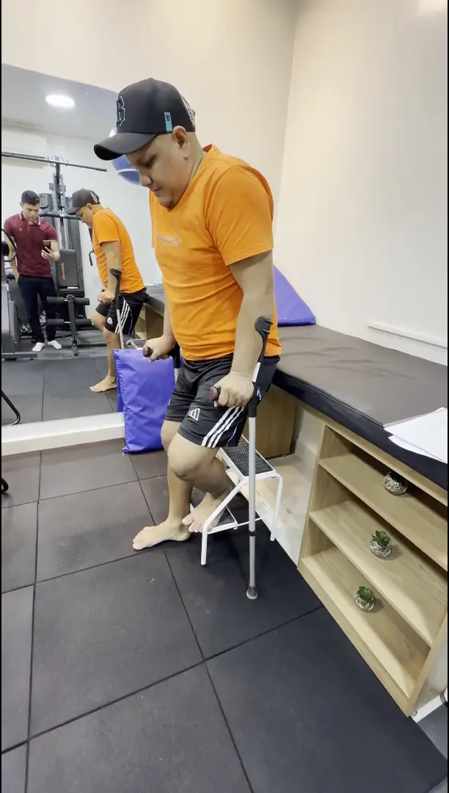

Manejo da Dor Crônica
Baseado na ciência moderna da dor com formação pelo Einstein. Protocolo multimodal para fibromialgia, lombalgia crônica, dor neuropática e condições de difícil resolução.
Fisioterapeuta · CREFITO 12: 443572-F
Especialização em Dor pelo Hospital Albert Einstein e protocolos internacionais FIFA aplicados à reabilitação ortopédica, esportiva e ao manejo de condições complexas.
Sobre o Profissional
Sou fisioterapeuta, graduado pela Universidade do Estado do Pará (UEPA) e pós-graduando em Dor pelo Hospital Israelita Albert Einstein — uma das maiores referências mundiais em medicina e pesquisa científica —, minha formação une o rigor acadêmico à prática clínica avançada, com Especialização adicional em Fisioterapia Ortopédica pelo Centro Educacional Sete de Setembro. Atuo no tratamento de casos complexos de dores crônicas e na reabilitação pós-operatória de artroplastias de quadril e joelho, lesões ligamentares, fraturas e patologias traumato-ortopédicas. Certificado pelo FIFA Diploma in Football Medicine, também acompanho atletas com foco em prevenção de lesões, performance e retorno seguro ao esporte. Minha filosofia é simples: menos dependência de medicamentos, mais funcionalidade, movimento consciente e qualidade de vida real.
Graduação em Fisioterapia · Universidade do Estado do Pará
Especialização em Fisioterapia Ortopédica Avançada · Centro Educacional
Pós-graduação em Dor · Hospital Israelita Albert Einstein · Em curso
Diploma in Football Medicine · Certificação Internacional
Av. São Sebastião, 573 — Santa Clara · Santarém, PA / Edifício Cristal, sala 605. Atendimento presencial e online para todo o Brasil e exterior.
Expertise Clínica
Baseado na ciência moderna da dor com formação pelo Einstein. Protocolo multimodal para fibromialgia, lombalgia crônica, dor neuropática e condições de difícil resolução.
Especializado em artroplastias de quadril e joelho, reconstruções ligamentares e recuperação funcional de fraturas. Retorno seguro às atividades com protocolo progressivo individualizado.
Portador do FIFA Diploma in Football Medicine. Protocolos internacionais aplicados a atletas amadores e profissionais: prevenção de lesões, otimização de performance e retorno ao esporte.
Anamnese detalhada, avaliação biomecânica e elaboração de plano terapêutico individual. Cada paciente recebe um protocolo único baseado em sua história, objetivo e condição clínica.
Portfólio Clínico
Casos representativos da prática clínica. Identidades preservadas.

Fratura do 5° metatarso tratada de forma conservadora. Protocolo de reabilitação funcional progressiva com retorno às atividades sem necessidade de cirurgia.

Reabilitação pós-operatória de fratura complexa de tíbia e fíbula, desde a fase hospitalar até o retorno funcional completo com protocolo progressivo individualizado.

Abordagem fisioterapêutica para cefaleia tensional e enxaqueca crônica com técnicas manuais, reequilíbrio postural e educação em dor para redução da frequência das crises.

Avaliação precisa de uma dor crônica no ombro, com limitação para exercícios no Crossfit e na natação. Diagnóstico funcional detalhado para direcionar o protocolo de tratamento.

Pós-operatório complexo de disjunção da sínfise púbica, evoluindo progressivamente até o abandono das muletas.
Na Mídia
Entrevistas e participações em programas de televisão levando informação sobre saúde, fisioterapia e bem-estar para o público paraense e nacional.
Globo · G1 Santarém
A escolha incorreta do travesseiro pode causar dores no pescoço e nas costas. Dr. João Alberto explica como prevenir.
Assistir entrevista →Globo · G1 Santarém
O problema pode dificultar movimentos simples do dia a dia. Dr. João Alberto esclarece causas, sintomas e tratamento com fisioterapia.
Assistir entrevista →Quem confia no trabalho
Pronto para recuperar seu movimento?
O primeiro passo para uma vida com menos dor começa com uma conversa. Contato direto e sem burocracia.
Av. São Sebastião, 573 — Santa Clara · Santarém, PA / Edifício Cristal, sala 605
Para todo o Brasil e exterior via telemedicina — mesma qualidade, sem distância.
Prefere que a gente te chame?
Preencha os dados abaixo. Isso ainda não confirma seu horário — nossa equipe entra em contato pelo WhatsApp para combinar data e horário.